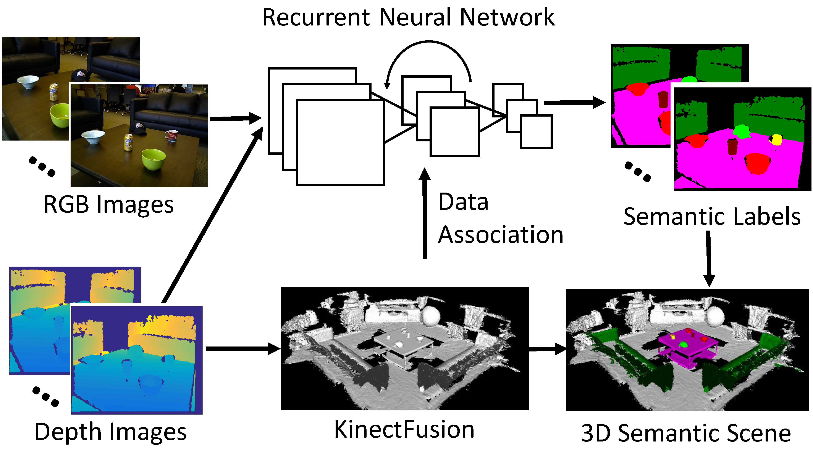
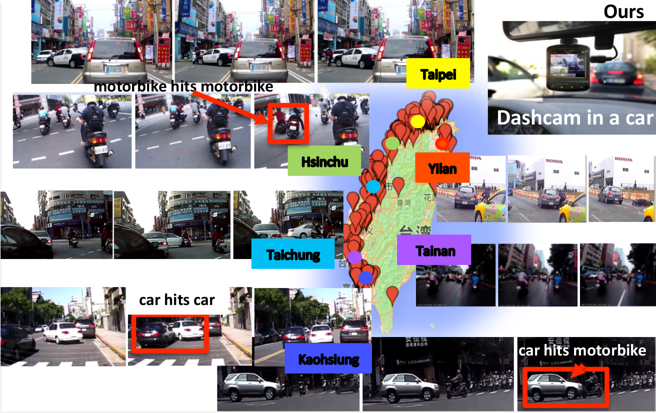
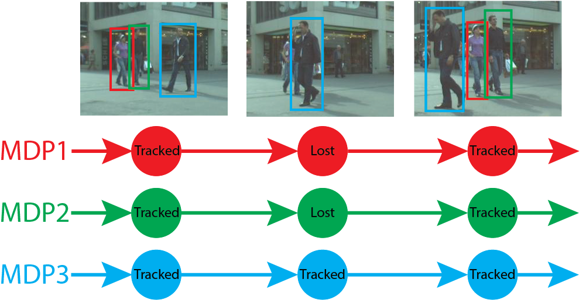

|
Kai Yao's homepage
Biography
I am a Postdoctoral Researcher in Computer Science & Engineering at the University of Washington, Seattle. My advisor is Prof. Dieter Fox. My research focuses on visual perception in robotics, with emphasis on understanding objects and scenes in the 3D world from images and videos. I received Ph.D. in computer vision from the University of Michigan at Ann Arbor in 2016 advised by Prof. Silvio Savarese, M.S. degree in computer science from Fudan University in 2010 advised by Prof. Xiangdong Zhou, and B.S. degree in computer science from Fudan University in 2007. (CV)
News
- 4/30/2017 Our work on DA-RNN is accepted to RSS 2017!
- 12/20/2016 Our work on SubCNN is accepted to WACV 2017!
- 10/28/2016 We organized the 3D Object Geometry from Single Image tutorial at 3DV 2016.
- 7/19/2016 Two papers related to 3D object recognition are accepted to ECCV 2016!
- 6/10/2016 I am joining Prof. Dieter Fox's group as a postdoc in August!
Publications
2017
|  | DA-RNN: Semantic Mapping with Data Associated Recurrent Neural Networks
Yu Xiang and Dieter Fox
In Robotics: Science and Systems (RSS), 2017.
arXiv, PDF, Bibtex, Poster, Slides, Code, Project
@incollection{xiang2017darnn,
author = {Xiang, Yu and Fox, Dieter},
title = {DA-RNN: Semantic Mapping with Data Associated Recurrent Neural Networks},
booktitle = {Robotics: Science and Systems (RSS)},
year = {2017}
}
|
2016
|  | Anticipating Accidents in Dashcam Videos
Fu-Hsiang Chan, Yu-Ting Chen, Yu Xiang, Min Sun
In Asian Conference on Computer Vision (ACCV), 2016.
PDF, Bibtex, Project (Oral)
@inproceedings{chan2016anticipating,
title = {Anticipating Accidents in Dashcam Videos},
author = {Chan, Fu-Hsiang and Chen, Yu-Ting and Xiang, Yu and Sun, Min},
booktitle = {Asian Conference Computer Vision (ACCV)},
year = {2016}
}
|
2015
|  | Learning to Track: Online Multi-Object Tracking by Decision Making
Yu Xiang, Alexandre Alahi and Silvio Savarese
In International Conference on Computer Vision (ICCV), pp. 4705-4713, 2015.
PDF, Bibtex, Technical_Report, Poster, Slides, MOT_Results, KITTI_Results, Code, Project (Oral)
@inproceedings{xiang2015learning,
author = {Xiang, Yu and Alahi, Alexandre and Savarese, Silvio},
title = {Learning to Track: Online Multi-Object Tracking by Decision Making},
booktitle = {International Conference on Computer Vision (ICCV)},
pages = {4705--4713},
year = {2015}
}
|
PhD Thesis
- 3D Object Representations for Recognition (PDF)
University of Michigan, PhD thesis, 2016.
Master Thesis
- Graphical Models for Semantic Context Modeling in Automatic Image Annotation (PDF)
Fudan University, Master thesis (in Chinese), Outstanding Master's Thesis Award of Shanghai, 2010.
Talks
- 3D Object Recognition and Scene Understanding (PDF)
In Mitsubishi Electric Research Laboratories, Boston, Massachusetts, 7/14/2017.
- DA-RNN: Semantic Mapping with Data Associated Recurrent Neural Networks (PDF)
In Robotics: Science and Systems (RSS), MIT, Massachusetts, 7/13/2017.
- Subcategory-aware Convolutional Neural Networks for Object Proposals and Detection (PDF)
In IEEE Winter Conference on Applications of Computer Vision, Santa Rosa, California, 3/29/2017.
Links
|
|
{kind=link}
{kind=link}
{kind=link}